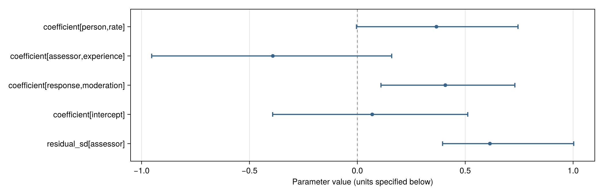
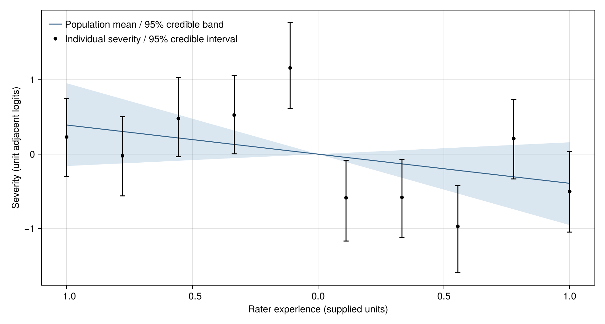
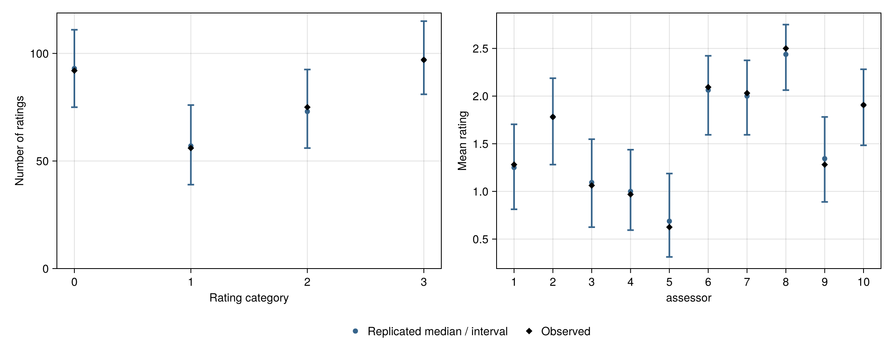

Explain ratings and rater severity
For a bounded slider including its endpoints, see Bounded Scores. This page uses declared ordinal categories.
Use this scalar model to ask: does speaking rate relate to ratings, does experience relate to rater severity, and does experience change the rate–rating association? It jointly estimates the regression and latent effects, retaining their uncertainty. Start with one outcome; criterion-owned supports and effects provide an explicit scalar extension for several outcomes when that common-trait assumption is appropriate.
Specify who owns each predictor
| Question | Declaration | Positive coefficient means |
|---|---|---|
| One performance per speaker: is rate associated with ratings? | predictors.person | Higher latent performance and ratings. |
| Is rater experience associated with severity? | A named facet in predictors and population | Greater severity, hence lower ratings. |
| Does experience change the rate association? | A precomputed rate × experience column in predictors.response | A more positive rate association as experience increases. |
| How much rater variation remains? | population.assessor | The estimated residual SD measures between-rater severity variation. |
Names such as assessor are yours to choose. Owner predictors must be constant within their person/facet ID. Numeric columns retain the supplied units: encode categories and construct products explicitly. Choose meaningful centering and scaling before setting coefficient priors; the package does not standardize them.
Fit a small artificial example
This supplied dataset has 48 speakers, one performance per speaker, 10 raters, 320 ratings and categories 0–3. rate and experience are artificial values in [−1,1]; moderation is their product. These priors illustrate the operation, not recommended priors for a speaking study.
using BayesianMGMFRM, JSON3
using BayesianMGMFRM.Legacy
using Distributions: Normal, LogNormal # selective import avoids a `fit` name conflict
ratings = JSON3.read(read(joinpath(pkgdir(BayesianMGMFRM),
"examples", "data", "explanatory_ratings.json"), String))
spec = mfrm_spec(ratings;
person=:speaker, score=:rating, category_levels=0:3,
facets=(assessor=:judge, prompt=:prompt), steps=:global,
prior_sd=(person=0.7, facets=(prompt=0.0,), step=0.45),
population=(assessor=LogNormal(log(0.5), 0.5),),
predictors=(person=(rate=Normal(0.1, 0.6),),
assessor=(experience=Normal(-0.1, 0.6),),
response=(moderation=Normal(0, 0.6),)),
intercept=Normal(0, 0.8))
validate_design(spec) # necessary structural checks, not proof of adequate information
prior_predictive_check(spec; ndraws=100, seed=9601) # BEFORE conditioning on ratings
result = fit(spec; chains=4, warmup=600, ndraws=1000, seed=7002)
qualify(result) # inspect whole-fit diagnostics; not model adequacy
focus = ["coefficient[person,rate]", "coefficient[assessor,experience]",
"coefficient[response,moderation]", "residual_sd[assessor]"]
report = fit_report(result; parameters=focus) # intervals and Monte Carlo errorA positive rate coefficient describes an association; the experience coefficient has the opposite sign convention because it predicts severity. With the product included, the rate association at experience e is βrate + e × βproduct. The experience coefficient alone describes its association when rate is zero. Do not interpret any of these as causal effects or regress posterior mean abilities a second time as if they were observed without error.
Inspect and preserve the result
using CairoMakie
BayesianMGMFRM.plot(report; kind=:posterior)
ppc = predictive_check(result; groupby=:assessor, ndraws=500, seed=8001)
BayesianMGMFRM.plot(ppc; kind=:predictive)
save_fit("explanatory-fit.jls", result)
restored = load_fit("explanatory-fit.jls")
receipt = save_report("explanatory-report.json", report; return_receipt=true)
stored = load_report(receipt.path; expected_sha256=receipt.sha256)
BayesianMGMFRM.plot(stored; kind=:posterior) # redraw; no estimation or simulationFigure annotations are written outside the image by default; retain them with the figure. The PPC compares observed category counts and rater mean ratings with replicated datasets from the posterior. Its intervals describe replicated data, not coefficients. They are pointwise, and endpoint MCSE is not assessed. Neither a successful PPC nor passing numerical diagnostics proves the model is appropriate. Inspect parameter/interval-endpoint MCSE separately; 500 PPC replicates are an exploratory display. Native draws require their producing source and compatible environment; portable reports contain computed values, not reusable samples.
Read the supplied result without fitting
The artificial four-chain example passed its whole-fit numerical diagnostics (maximum Rhat 1.0031; minimum bulk/tail ESS 1,630; no retained divergences). The rate coefficient is 0.37 with a 95% credible interval [−0.004, 0.745]; its lower endpoint MCSE is 0.010, so treating its exact side of zero as a stable decision would be misleading. The experience coefficient is −0.39 [−0.95, 0.16]. Substantial uncertainty is part of the answer. The moderation coefficient is 0.41 [0.11, 0.73]. These numbers describe the artificial dataset, not evidence about actual speakers.

Medians and 95% equal-tailed credible intervals. Person/response coefficients raise ratings; the experience coefficient predicts severity, whose positive values lower ratings. Predictor coefficients use their own supplied units; the SD is in unit logits. The global intercept is also shown.

Black intervals describe individual severity. The blue band describes the population mean conditional on experience, not a new rater's prediction interval. These are pointwise intervals and associations, not simultaneous or causal claims.

Observed black diamonds versus posterior-replicated medians and 95% predictive intervals, for category counts and rater means. This checks two summaries of known-owner predictions; it cannot establish local independence or general adequacy.
Changing only the rater-SD prior from LogNormal(log(0.5),0.5) to LogNormal(log(0.8),0.7) changed its posterior median from 0.61 to 0.68 and its 95% interval from [0.39,1.00] to [0.41,1.20]. Both fits passed numerical diagnostics. The ten-rater example retains prior sensitivity; two priors are not a general robustness analysis. Across these fits, focal mean MCSE was at most 0.0083 and interval-endpoint MCSE at most 0.024. No scientific decision tolerance is implied.
folder = joinpath(pkgdir(BayesianMGMFRM), "examples", "reports")
checksums = JSON3.read(read(joinpath(folder, "explanatory-sha256.json"), String))
stored = load_report(joinpath(folder, "explanatory-posterior.json");
expected_sha256=checksums["explanatory-posterior.json"])
BayesianMGMFRM.plot(stored; kind=:posterior)Use explanatory-ppc.json with its checksum and kind=:predictive for the saved PPC. Redrawing these computed reports neither estimates nor simulates. This is one operation example, not SBC or evidence of general recovery or coverage.
Meaning and boundaries
The adjacent-category logit is θperson − Σ faceteffect + Xresponse δ − τk, with multiplier and slopes exactly 1, not 1.7. Person and population-declared facets use effect = X_owner β + σ z, with independent standard-normal z. Their residuals have population mean zero; they do not sum to zero in the observed panel. Other facets and step vectors retain the finite sum-zero priors in user-named additive facets.
- Supply a nonnegative number in
populationto fix an iid residual SD, orLogNormal(logmean, logsd),truncated(Normal(0, s), 0, Inf)(HalfNormal), ortruncated(LocationScale(0, s, TDist(ν)), 0, Inf)(Half-t) to estimate it. Omit that owner's competingprior_sdentry.population=(person=..., assessor=...)can estimate both residual SDs when the allocation provides information. Priors for coefficients are explicitNormaldistributions; other prior families are not yet supported. - An optional Normal
interceptadds one global intercept. Duplicate mean predictors or coincident estimated covariance components are refused for fitting. Estimated residual SDs require repeated observations within owner in this domain. Passing these screens does not establish global identification. Few raters can make variance estimates prior-sensitive. - Known-owner prediction preserves fitted owner attributes. You may change ordinary response covariates explicitly; decomposed known-performance predictors retain their stored source values and means. New persons/raters and population predictions are not provided.
predictive_probabilitiesreturns probability intervals, whereaspredictive_checkgenerates outcomes. Neither automatically refits. - One person/one performance combines stable person and unique-performance variation. Repeated-performance within/between decomposition is available with explicit performance ownership and effects. Random slopes and heteroscedastic residuals remain separate extensions. Criterion-specific coefficients and mixed supports use explicit declarations; manually adding product columns fits fixed moderation, not random slopes.
- This is an additive severity hierarchy. Patz's HRM instead introduces an ideal discrete rating and a rater consistency mechanism. The residual severity SD here is not within-rater inconsistency, halo or a measure of rater accuracy.
coordinates exposes coefficients, residual SDs and the change-of-volume. Coefficients use white coordinates β = μ + s q. LogNormal SDs use σ = exp(μlogσ + slogσ q) with a standard-normal prior on q. HalfNormal and Half-t SDs use u = log σ with normalized density log p(exp(u)) + u; this log-scale coordinate is not standard normal. The volume includes m log σ per iid residual block, log(slogσ σ) for a LogNormal SD or log σ for a HalfNormal/Half-t SD, coefficient log scales and finite-subspace scales. Do not add a second SD prior or Jacobian to this target. `standataexports dense reference matrices forsrc/stan/explanatory_facets.stan`; serialize matrices as arrays of rows for CmdStan JSON. This is a finite-point verification reference, not a second fitted posterior or a speed comparison.
Sources and what they support
- De Boeck et al. (2011): explanatory item-response models and person/item/response predictor ownership.
- Patz et al. (2002): the distinct ideal-rating HRM; multiple raters do not create new performances.
- Robitzsch & Steinfeld (2018): taxonomy and existing R implementations; arbitrary named facets are not unique to this package. Formula and scale differences matter when comparing models.
- Leckie & Baird (2011): experience, mean severity and residual rater variation in a crossed model. Their continuous score-difference likelihood is not this ordinal PCM.
For multiple performances per person, see between/within associations.
See category design matrices for the coefficients of a task feature in an LLTM. A person covariate instead enters the population mean, as in the linked group example.
Shared event effects
When several criteria describe the same person/rater assessment, a shared residual can represent their remaining dependence. Create globally unique person/rater pair IDs; do not use the rater ID alone. A person/testlet ID can instead link the items in a testlet. Repeated observations within each event, and multiple events per person, are needed to separate the event and person SDs. The structure is an exchangeable Gaussian event effect; it does not identify a psychological cause of halo or establish recovery across arbitrary designs.
using Distributions: Normal, truncated
# ratings.event contains the same ID across criteria of one assessment.
spec = mfrm_spec(ratings; person=:person, score=:score,
facets=(item=:item, rater=:rater, event=:event),
assessment=:event, steps=:global, category_levels=0:4,
prior=:default,
random_effects=(event=truncated(Normal(), 0, Inf),))
fit_event = fit(spec; chains=4, warmup=1000, ndraws=1000, seed=42)
posterior_summary(fit_event; parameters=["residual_sd[event]"])
event_loo = criteria(fit_event; unit=:assessment, integrate=:event)The MRCML shared-effect route reports person deviations and population_mean separately. The predictor-based population=(event=..., ...) route retains its coefficient[intercept] name. Add their joint posterior draws for absolute ability on the centered-facet scale. Shared facet effects enter with a minus sign in the adjacent logit. Their SD measures event variation, with no sign attached.
HalfNormal and Half-t priors have positive density at zero but no point mass there. They permit learning small SDs without guaranteeing unbiased boundary estimation. With a continuous SD prior, Pr(σ > 0) is one and is not evidence for an effect. Report a credible upper bound and probabilities such as Pr(σ < δ | data) for a substantively justified, stated δ. Check the MCSE of that probability along with R-hat, bulk/tail ESS, and sampler diagnostics.
Assessment-unit LOO integrates a single shared effect jointly over all ratings in the held-out assessment. The other owners must remain represented in the training data. Inspect quadrature and Pareto-k warnings before interpreting a score difference. Q3 and Infit/Outfit condition on the estimated shared effects; their posterior predictive references ask about remaining misfit. Reliability reports the finite-cohort posterior variance ratio and its numerical MCSE. Population/design reliability and a credible interval for that posterior functional are not supplied.
q3 = diagnostics(fit_event; kind=:residual_correlation, by=:item, unit=:event)
fit_stats = diagnostics(fit_event; kind=:fit_statistics, by=:rater)
rel = reliability(fit_event)
# Fit the standard model to exactly the same rows and declared event IDs.
standard_loo = criteria(fit_standard; unit=:assessment)
comparison = compare_models(:shared => event_loo, :standard => standard_loo;
criterion=:psis_loo, independent_model_rng=true)The independence flag requires independently generated model/refit draws. High Pareto-k events can be explicitly refitted with BayesianMGMFRM.loo_refit_plan; failed or unavailable MCSE remains visible. Neither event-wise deletion nor its Monte Carlo error estimates a population sampling SE for a crossed design.